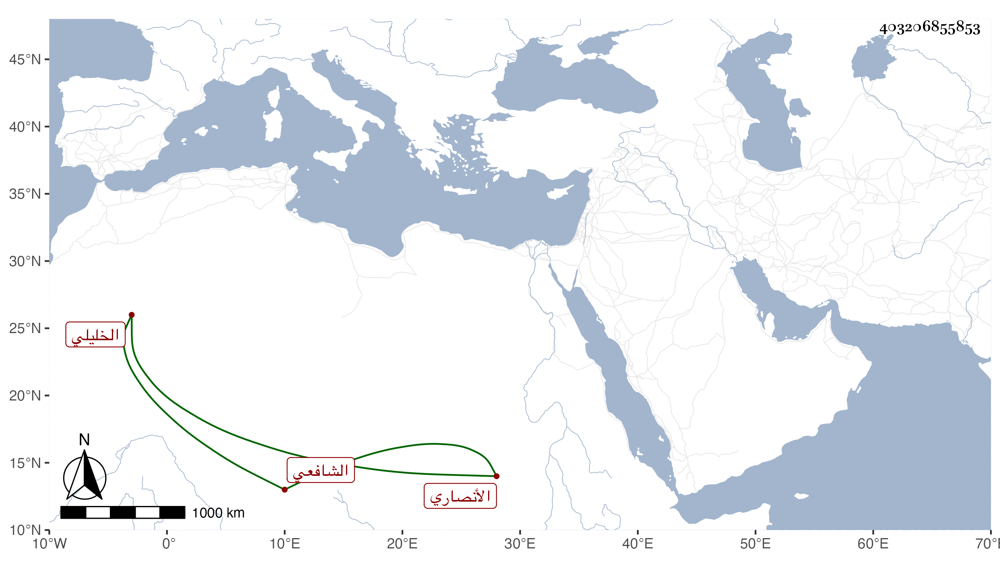

0902Sakhawi.DawLamic.ITO20230111-ara1.EIS1600.403206855853
Biography ID: 403206855853
749
خليل بن عبد الرحمن بن أحمد بن محمد بن أحمد غرس الدين الأنصاري الخليلي الشافعي أخو إبراهيم الماضي ويعرف بابن قوقب . ولد سنة ثمان وثمانمائة وسمع شريكا لأخيه من ابن الجزري وإبراهيم بن حجي والتدمري وأحمد بن الحسن النصيبي وآخرين ، ولقيه بعض الطلبة فأخذ عنه واستجازه لبعض الأولاد وكان خيرا ناب في إمامة مسجد الخليل وقتا وعنده كما قال أخوه مشاركة قال والظاهر انه قرأ في النحو على ابن رسلان . مات ببلده في سنة أربع وسبعين رحمه الله .
